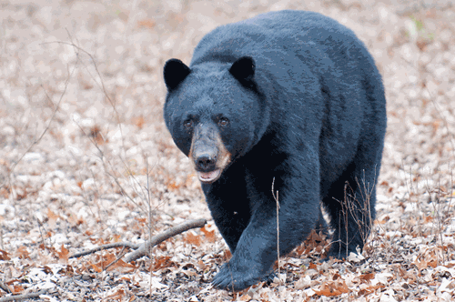

Location and Weather Information
Shelving Rock falls is located on the eastern banks of lake George. Accessible by road, trail, and water. Hiking trails connect all areas of the park making getting around easy once here.
| Monday | | +15° | +3° |
| Tuesday | | +12° | +3° |
| Wednesday | | +9° | -1° |
| Thursday | | +4° | -2° |
| Friday | | +12° | +2° |
| Saturday | | +12° | +5° |
See 7-Day Forecast
Crowding:
Shelving rock falls and surrounding area are quiet and peaceful. The only road being a long dirt road makes this spot a generally uncrowded option.
Crowd Rating: 10/10
Wildlife Information
Shelving Rock Falls is most notable for the black bear population. They are extremely plentiful in the area and are great to see from a safe distance. However it can't be recommended to go close to them.
